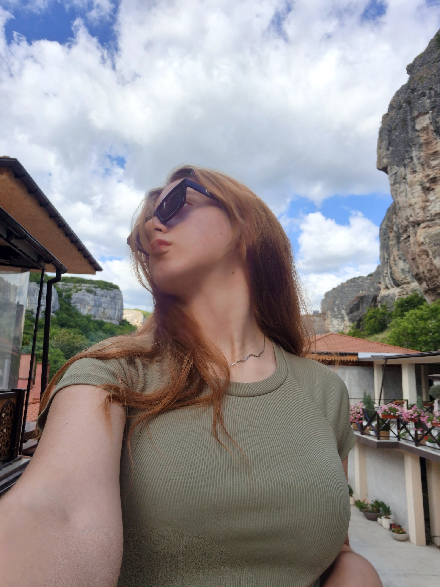

Студентка 3 курса ИВТиПТ, специальность 09.03.03 "Прикладная информатика"
День рождения: 09.11.2006, 19 лет

Родилась в Севастополе в 2006 году. С детства мечтала стать программистом и создавать игры. На протяжении всей жизни была предана своему выбору и в итоге, после 9 класса, поступила в Севастопольский колледж информационных технологий и промышленности в 2022 году на специальность 09.02.01 "Компьютерные системы и комплексы". Это было не то направление, которое она хотела изначально и потому, не окончив колледж, решила поступить в университет и выбор пал на ЮФУ, на специальность 09.03.03 "Прикладная информатика"